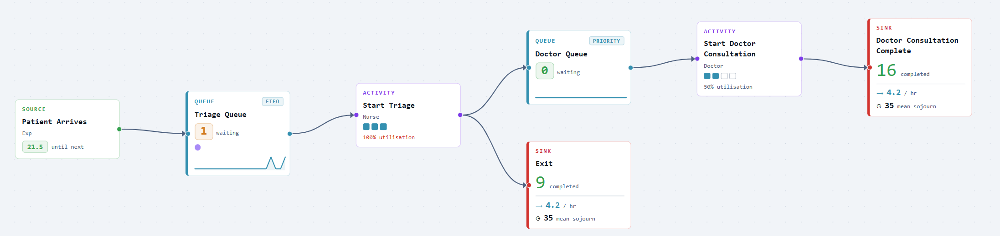
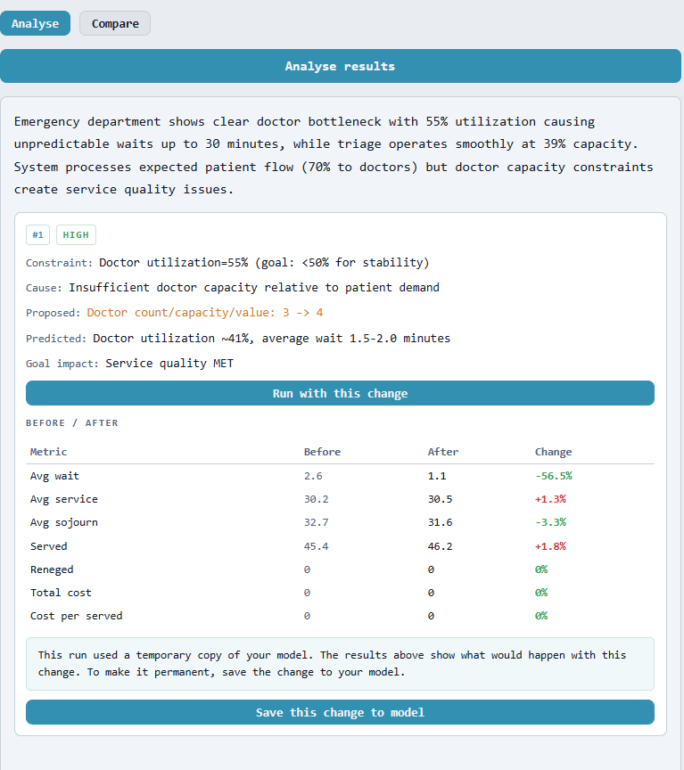

A&E triage, from prompt to tested change in minutes.
The brief is written in plain English: patients arrive roughly every 10 minutes, one route leaves after triage, and the rest join a priority doctor queue. Simmodlr turns that description into a working emergency-department model with arrivals, queues, activities, resources, and exits ready to review.
From there the model can be run, changed, and analysed. The assistant spots the doctor-capacity constraint, proposes moving doctors from 3 to 4, and runs the comparison before the change is saved back to the model.

The proposal is readable before it is saved: who arrives, how they flow, which queues and resources are used, and what the model is intended to simulate.

The model is not a static diagram. During execution the canvas shows queues, completions, utilisation, throughput, and mean sojourn time as the patient flow unfolds.

Explore keeps running batches until the confidence target is met, then summarises the system in plain numbers: waits, time in system, arrivals, served patients, and whether anyone left before service.

The assistant identifies the doctor bottleneck, runs a temporary copy with one extra doctor, and shows the before-and-after effect before the user commits the change.